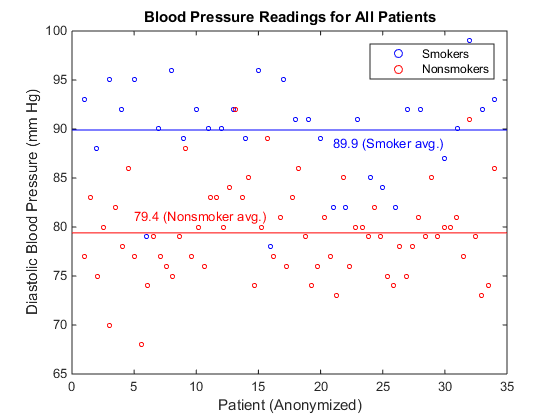

Sort and Plot MATLAB Data from Python
This example shows how to sort data about patients into lists of smokers and nonsmokers in Python® and plot blood pressure readings for the patients with MATLAB®.
Start the engine, and read data about a set of patients into a MATLAB table. MATLAB provides a sample comma-delimited file, patients.dat,
which contains information on 100 different patients.
import matlab.engine
eng = matlab.engine.start_matlab()
eng.eval("T = readtable('patients.dat');",nargout=0)
The MATLAB
readtable function reads the data into a table. The engine does not
support the MATLAB table data type. However, with the MATLAB
table2struct function you can convert the table to a scalar
structure, which is a data type the engine does
support.
eng.eval("S = table2struct(T,'ToScalar',true);",nargout=0)
eng.eval("disp(S)",nargout=0)
LastName: {100x1 cell}
Gender: {100x1 cell}
Age: [100x1 double]
Location: {100x1 cell}
Height: [100x1 double]
Weight: [100x1 double]
Smoker: [100x1 double]
Systolic: [100x1 double]
Diastolic: [100x1 double]
SelfAssessedHealthStatus: {100x1 cell}
You can pass S from the MATLAB workspace into your Python session. The engine converts S to a Python dictionary,
D.
D = eng.workspace["S"]
S has fields that contain arrays. The engine converts cell arrays
to Python
list variables, and numeric arrays to MATLAB arrays. Therefore, D["LastName"] is of data type
list, and D["Age"] is of data type
matlab.double.
Sort blood pressure readings into lists of smokers and nonsmokers. In
patients.dat, the column Smoker indicated a
smoker with logical 1 (true), and a nonsmoker with a logical 0 (false). Convert
D["Smoker"] to a matlab.logical array for
sorting.
smoker = matlab.logical(D["Smoker"])Convert the Diastolic blood pressure readings and
Smoker indicators into 1-by-100 MATLAB arrays for
sorting.
pressure = D["Diastolic"]
pressure.reshape((1,100))
pressure = pressure[0]
smoker.reshape((1,100))
smoker = smoker[0]
Sort the pressure array into lists of blood pressure readings for
smokers and non-smokers. Python list comprehensions provide a compact method for iterating over sequences.
With the Python
zip function, you can iterate over multiple sequences in a single
for
loop.
sp = [p for (p,s) in zip(pressure,smoker) if s is True]
nsp = [p for (p,s) in zip(pressure,smoker) if s is False]
Display the length of sp, the blood pressure readings for smokers
in a list.
print(len(sp))
34
Display the length of nsp, the list of readings
for nonsmokers.
print(len(nsp))
66
Calculate the mean blood pressure readings for smokers and nonsmokers. Convert
sp and nsp to MATLAB arrays before passing them to the MATLAB
mean
function.
sp = matlab.double(sp)
nsp = matlab.double(nsp)
print(eng.mean(sp))
89.9117647059
Display the mean blood pressure for the nonsmokers.
print(eng.mean(nsp))
79.3787878788
Plot blood pressure readings for the smokers and nonsmokers. To define two
x-axes for plotting, call the MATLAB
linspace function. You can plot the 34 smokers and 66 nonsmokers on
the same scatter
plot.
sdx = eng.linspace(1.0,34.0,34)
nsdx = eng.linspace(1.0,34.0,66)
Show the axes boundaries with the box
function.
eng.figure(nargout=0)
eng.hold("on",nargout=0)
eng.box("on",nargout=0)
You must call the figure, hold, and
box functions with nargout=0, because these
functions do not return output arguments.
Plot the blood pressure readings for the smokers and nonsmokers, and label the plot. For many MATLAB functions, the engine can return a handle to a MATLAB graphics object. You can store a handle to a MATLAB object in a Python variable, but you cannot manipulate the object properties in Python. You can pass MATLAB objects as input arguments to other MATLAB functions.
eng.scatter(sdx,sp,10,'blue')
<matlab.object object at 0x22d1510>
In the rest of this example, assign the output argument of MATLAB functions to h as a
placeholder.
h = eng.scatter(nsdx,nsp,10,'red')
h = eng.xlabel("Patient (Anonymized)")
h = eng.ylabel("Diastolic Blood Pressure (mm Hg)")
h = eng.title("Blood Pressure Readings for All Patients")
h = eng.legend("Smokers","Nonsmokers")
Draw lines showing the average blood pressure readings for smokers and nonsmokers.
x = matlab.double([0,35])
y = matlab.double([89.9,89.9])
h = eng.line(x,y,"Color","blue")
h = eng.text(21.0,88.5,"89.9 (Smoker avg.)","Color","blue")
y = matlab.double([79.4,79.4])
h = eng.line(x,y,"Color","red")
h = eng.text(5.0,81.0,"79.4 (Nonsmoker avg.)","Color","red")
